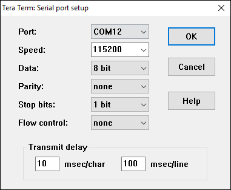
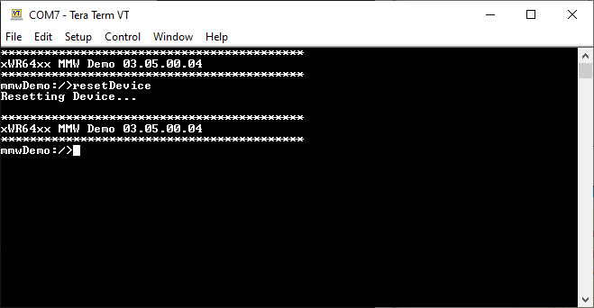
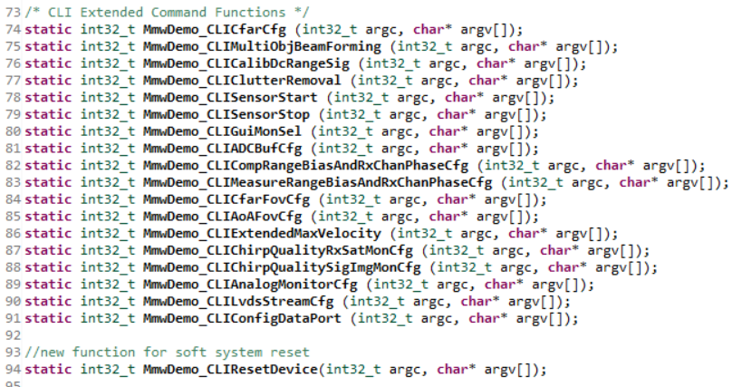
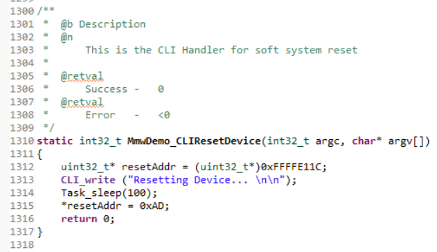
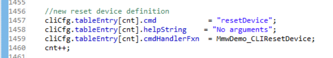

# Overview
This user guide will walk through the necessary steps to add a CLI (Command Line Interface)
command to send a soft reset signal to the device. The included project is the
[68xx AOP Out-of-Box Demo](../../../Out_Of_Box_Demo/docs/Out_Of_Box_Demo_User_Guide.html)
and the files included provide a software based sequence for sending a soft
reset signal to the device via CLI command. This can be quickly implemented
following the instructions under Quickstart.
This lab is a demonstration of defining custom CLI commands that can be flashed
onto the device. These techniques can be easily transferred to enable additional
CLI commands on existing projects using the xWR6843 and xWR6443 devices. For help
with this see the Developer's Guide.
This lab also serves as a demonstration of how a user application on the xWR6843 can
trigger a soft reset of the device without any additional hardware.
# Quickstart
## Prerequisite
[[y! Run Out of Box Demo
Before continuing with this lab, users should first run the out of box demo for the EVM. This will enable users to gain familiarity
with the sensor's capabilities as well as the various tools used across all labs in the mmWave Industrial Toolbox.
]]
## 1. Software Requirements
Tool | Version | Download Link
----------------------------|---------------------------|--------
TI mmWave SDK | 3.5.x.x | [Link to Latest mmWave SDK](https://www.ti.com/tool/MMWAVE-SDK). To access a previous version of the mmWave SDK scroll to the bottom of the table and click the link under "MMWAVE-SDK previous release". Repeat to continue stepping back to previous versions.
mmWave Industrial Toolbox | Latest | Download and install the toolbox. Go to [Using TI Resource Explorer & the mmWave Industrial Toolbox](../../../../docs/readme.html) for instructions.
Code Composer Studio | Latest | [Code Composer Studio](https://www.ti.com/tool/CCSTUDIO)
Terminal Emulator | Latest | [TeraTerm](https://ttssh2.osdn.jp/index.html.en) or another terminal emulation software to ensure proper data streaming upon device bootup. The instructions provided in this user guide are based on [TeraTerm](https://ttssh2.osdn.jp/index.html.en)
## 2. Flashing the EVM
A prebuilt binary setup with the soft reset CLI command added for the Out
of Box Demo has already been generated with the modified code for adding
the additional CLI command.
Detailed steps on how to add CLI commands to the mmw_cli.c file and flash
the binary with the addional CLI commands can be found in the later Developer's
Guide section of this user guide.
Please find the prebuilt binary file **soft_reset_using_cli_6843.bin**
in the directory below and flash it onto the EVM.
`<mmWave Industrial Toolbox>/labs/Fundamentals/Soft_Reset_Using_CLI/prebuilt_binaries/soft_reset_using_cli_6843.bin`
## 3. Checking CLI Reset Functionality with Tera Term Data Stream
To check that the EVM has been configured correctly, set the EVM to functional
mode after flashing. Power up the device and connect the EVM's Data COM port
to a Tera Term Instance to receive the EVM's data stream.
### Launch the UART Terminal
* Open one TeraTerm Instance and connect it to the COM port corresponding to the Control UART as described below:
* In the pop up window select **serial** and in the drop down menu and select the User UART port (see note below) and press OK.
* Go to **Setup → Serial Port** dialog and enter the COM Port number for the User UART port and a speed of **115200** and other settings as shown below and press OK.

[[y! COM Port Names
**IWR6843AOPEVM** CLI COM Port name: *Silicon Labs Dual CP2105 USB to UART bridge: Enhanced COM port*
**MMWAVEBOOST + IWR6843AOPEVM** CLI COM Port name: *XDS110 Class Application/User UART*
]]
### Send resetDevice command over CLI
* Power cycle the EVM by pressing the NRST button. The EVM will output start up info *xWR64xx MMW Demo 03.05.00.04* and a prompt to enter CLI commands.
* Enter the CLI command **resetDevice**.
* The CLI should print "Resetting Device..." and show start up info as seen in the image below.

**Note:** The device CLI does not recognize backspace. Any typos made while typing a CLI command into teraterm will cause an error.
## 4. Methods to call custom CLI reset command
The steps above walk you through calling the resetDevice CLI command directly
through the command line interface. However, it is common to send a seperate text
configuration file to the device through CLI. The resetDevice command can be through a text configuration file.
# Developer's Guide
## Editing the mmw_cli.c File
The mmw_cli.c file is part of the Out of Box Demo project and is included in the generated binary file that is flashed to the
EVM for the Out of Box Demo. The mmw_cli.c file can be edited to add functionality for additional CLI commands in any project
which refers to mmw_cli.c. This developer's guide walks through the process of adding a device reset CLI command using the
mmw_cli.c file and serves as an example of how to add a custom CLI command to the mmw_cli.c file.
The setup of the EVM device and CLI has the following simplified flow.
**MmwDemo_initTask → MmwDemo_CLIInit → CLI_open**
Note that a copy of the cli.c file containing all of the following code additions can be found within this fundamental lab already setup:
`<mmWave Industrial Toolbox>/labs/Fundamentals/Soft_Reset_Using_CLI/src/mmw_cli.c`
The following steps detail how to make custom CLI commands using the command created in the Reset Demo as an example.
1. Navigate to the mmw_cli.c file located in the following path in the SDK folder. `<mmWave Industrial Toolbox Install Path>\packages\ti\demo\xwr64xx\mmw`
2. Open the mmw_cli.c file for editing
3. Under the comment *CLI Extended Command Functions* is a list of functions
that can be run with a cli command. Declare the new function here as **static int32_t
MmwDemo_CLIYourNameHere(int32_t argc, char* argv[]);**. See image below for an
example declaring a new soft system reset function.

4. Within *CLI Function Definitions* define the new CLI command function.
The image below shows the function for using CLI to reset the device.

5. Within the MmwDemo_CLIInit task add a table entry to cliCfg for the new CLI command. **cmd** is the command that is sent via CLI to call
this function, **helpstring** are the arguments that can be entered via CLI after calling the function, **cmdHandlerFxn** is the name used for the function
(i.e. MmwDecmo_CLIYourNameHere). Follow this with a line stating **cnt++**. Below is the table entry specific for the CLI reset command.
If the function has no arguments initialize the **helpstring** as **"No arguments"** as seen below.

## Building binary with a new CLI command implemented
There are multiple methods to add a new mmw_cli.c file to an application, as follows.
* Update the original file, and reimport the CCS project (be sure to update the copy of mmw_cli.c that is called out in the .projectspec)
* Update the file in your CCS project. If your project is already imported, it can be modified directly in CCS
* Update the file and drag it into your CCS project. You can simply overwrite the existing copy by dragging the file into your project.
Once the project is successfully imported with the modified mmw_cli.c, simply build the project for the new binary.
## Verify Functionality of new CLI command
Once the project has been successfully built, the new binary should be found in your CCS workspace, and can be flashed to the device.
1. Set the EVM to flashing mode according to the [EVM Setup Guide](../../../../docs/hardware_guides/evm_setup_operational_modes.html)
2. Flash the binary using Uniflash. Refer to the [Guide for using Uniflash with mmWave devices](../../../../docs/software_guides/using_uniflash_with_mmwave.html)
3. Set the EVM to functional mode according to the [EVM Setup Guide](../../../../docs/hardware_guides/evm_setup_operational_modes.html)
4. Launch a Teraterm serial instance with settings shown below
[[y! COM Port Names
**IWR6843AOPEVM** CLI COM Port name: *Silicon Labs Dual CP2105 USB to UART bridge: Enhanced COM port*
**MMWAVEBOOST + IWR6843AOPEVM** CLI COM Port name: *XDS110 Class Application/User UART*
]]
5. Press reset button on device
6. Check terminal for startup message such as `xWR64xx MMW Demo 03.05.00.04`
7. Send new command over CLI (In this case *resetDevice*)
[[y! Avoid backspace in teraterm
The device CLI will treat a backspace as a literal character, which will cause commands to not be read properly.
]]
8. Ensure behavior matches what is defined in CLI function (In this case prints "Resetting Device..." and then causes a reset)
# Need More Help?
* Search for your issue or post a new question on the <a href="https://e2e.ti.com/support/sensors/f/sensors-forum" target="_blank">mmWave E2E forum</a>